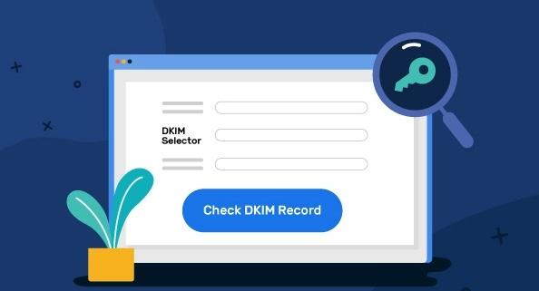

Email providers use DKIM to help prevent spoofing and phishing attacks. When sending emails, it is important to use DKIM to help ensure that your emails are not modified in transit and that they are actually coming from the claimed sender. This will help reduce the chances of your emails being spoofed or phished.
DomainKeys Identified Mail (DKIM) is a system designed for email protection, often used to detect alterations or the addition of files between message and message server.
DKIM encryption uses public-key cryptography to sign an email as a third party possesses a private key which completes the process as it leaves a receiving server. Subsequently, recipient servers use a public key published to the DKIM 's domain to confirm the source and conditions of the correspondence, and to examine for any alterations to the mail header and all attachments. Once the signature has been verified with the public key by the receiving server, the message passes DKIM and is deemed authentic.

A DKIM record is a type of Domain Name System (DNS) record that is used to authenticate email messages.It works by allowing organizations to sign email messages with a digital signature. This signature is then used to verify that the message was not altered in transit and that it came from the organization that it claims to come from.
A DNS TXT record known as a DKIM record is a particularly structured record used to store the public key that receiving mail servers use to validate a link to the message signer.
A DKIM record is created by a name, version, public key type, and email address, and is typically given by the provider that is sending your email.
Sending spoofed emails from trusted domains is a popular starting point for malicious spam and phishing campaigns, and DKIM makes it harder for them to do so. Because DKIM is not required, having email messages signed by DKIM give the impression of authenticity to your recipients and are less likely to end up in Junk or spam folders.
DKIM is compatible with existing email infrastructure, and we can work with SPF and DMARC to develop multiple layers of security for domains sending messages. Mail servers that don't support DKIM signatures can nevertheless receive signed messages without any issues. It is an optionally securable protocol, and DKIM is not a universally accepted standard.
Adding a DKIM record to your DNS is recommended, as it facilitates your messages' delivery. This helps messages using this security protocol are more likely to be delivered.
An additional advantage of DKIM is that Internet Service Providers use it to build a reputation over time. As you send emails and adjust your delivery practices (low spam and bounces, high engagement), you help your domain build a good reputation with ISPs, which enhances email deliverability.
While it's important to be familiar with what DKIM does, it's also important to be clear about what it does not address. Using DKIM will ensure your message hasn't been modified, but it doesn't encrypt your message's contents.
Many ESPs use opportunistic TLS to encrypt messages as they move between sender and recipient, but unencrypted messages can still be sent by an email server if it refuses to make TLS connections. The contents of an email will remain distinct once it has been delivered, but it's headers will display the DKIM signature.
To sum up, DKIM is an important email security protocol, which is used by major email providers such as Google, Microsoft, Yahoo and AOL. DKIM helps authenticate that email is actually from the sender's server, and that the sender is authorized to send emails on behalf of that domain. DKIM is often confused with SPF, but it's a technique that's used for outbound email whereas SPF is used to confirm where a mail is coming from.